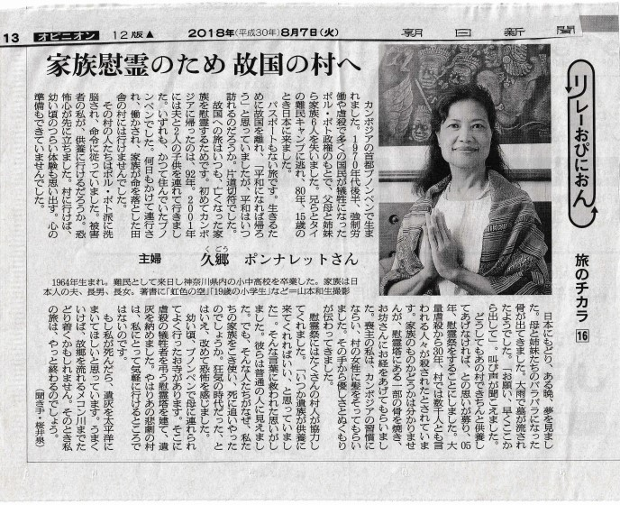

| | TOP | | 現在までの活動 | | 慰霊墓参り | | 計画 | | よくある質問と回答 | | 反響 | | 運営者 | | 収支表 | | カンボジアの歴史 | |
| 朝日新聞 （掲載年月日：2018年8月7日） リレーオピニオン -旅のチカラ- 家族慰霊のため 故郷の村へ  |
| ◆今まで様々な形で支援して下さった皆様へお知らせ◆ 皆さまの温かいご支援のおかげ様で、「色のない空慰霊活動」は たいへん大きな成果をあげることができました。 心より感謝いたしております。 2007年6月14日に、国賓として来日されたカンボジア王国のフン・セン首相にお会いする機会に恵まれました。 その際に、「両親・兄弟はじめ、プロン丘にて集団虐殺され、 慰霊塔に保管されている ７０００名の同胞の遺骨を火葬したい」 との要望書をお渡しすることができしました。 そして今月の ９月１１日付けに在日本国カンボジア王国大使館 を通じて、その返事が届きましたのでご報告いたします。 翻訳してみましたので、ご一読いただければとても幸いです。 詳しくはこちら |
| |
|
| ■カンボジアの亡き家族と同胞たちへ想いを馳せて 久郷 ポンナレット |
カンボジアでは、ポル・ポト時代に集団虐殺された200～300万の人たちがいます。 彼らは今でも供養されず、虐殺された場所に野ざらしのままです。 多くの帰らなかった人々の中には、私の両親兄姉妹の６人も含まれております。 生まれた時代による運命だったとしても、やはり割り切れないものがございます。 「遺骨を掘り起こし、心安らかに眠れるお墓を造り、ご供養したい」 辛うじて生き延びた私の、亡くなった家族や仲間に対するせめてもの願いです。 カンボジア全土にある「200～300万人のお骨を掘り起こすこと」は、もはや不可能なことかもしれません。 しかし、どこかで誰かが始めないと何も変わりません。 全国は無理ですので、せめて 「ある日突然、私の６人の家族と一緒にプノンペンからコンポントム州のトノート村への強制移住させられ、 過酷な強制労働の後に虐殺され、今もその場所に眠っている500～1000人の人々の遺骨」 まずは彼らの遺骨だけでも、故郷であるプノンペンのお寺に納めたいと思います。 皆、最後までプノンペンに帰ることを夢見ておりました。 この先もし供養することがあっても、それは労働させられ虐殺された場所ではなく、プノンペンへ連れ帰りたいと思います。 そのために、プノンペンに集団で埋葬できる場所を作りたいと計画しています。 埋葬場所として検討している場所はありますが、私ひとりの力ではどうすることもできません。 ぜひとも皆さまからのお力添えを頂きたいと思います。このままでは何かが終わらないのです。 カンボジアが次の時代へ行くためにも、「形となって見える何か」で、過去へ区切りをつける必要があると思います。 もう二度と、この地球上のどの世界でも同じ事が起こらないために。 |
  |
| 写真は、トノート村の入り口と、家族や仲間の遺骨があると思われる現在タロイモ畑です。 |
| ● ご協力頂ける方は、下記へ振込みをお願い致します。 |
| 郵便局 口座番号１０２００－９５８３７１０１ |
| 加入者名
色のない空 基金 ※募金頂ける方、もしよろしければご連絡先をご記入下さい。 領収証とお礼状を送らせて頂きます。 |
| 目標に達成するまでだいぶ時間がかかると思いますが、時間をかけて色々な方々に活動を知って頂く過程こそ大事だと思いますので、ゆっくり活動していこうと考えております。 達成の暁には、希望する皆様とカンボジアに行き、「色のない空を辿る旅」を行いたいと思っております（旅費は各自負担）。 この基金が、強い生命力を与え・育んでくれた『祖国と亡き仲間たちへの償いと感謝の印』となれば、この上ない悦びです。 最後まで読んで頂き、ありがとうございました。 ２００４年８月吉日 久郷 ポンナレｯト |
 |

TOPへ戻る |